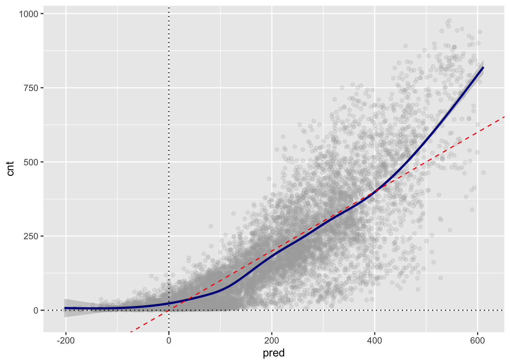
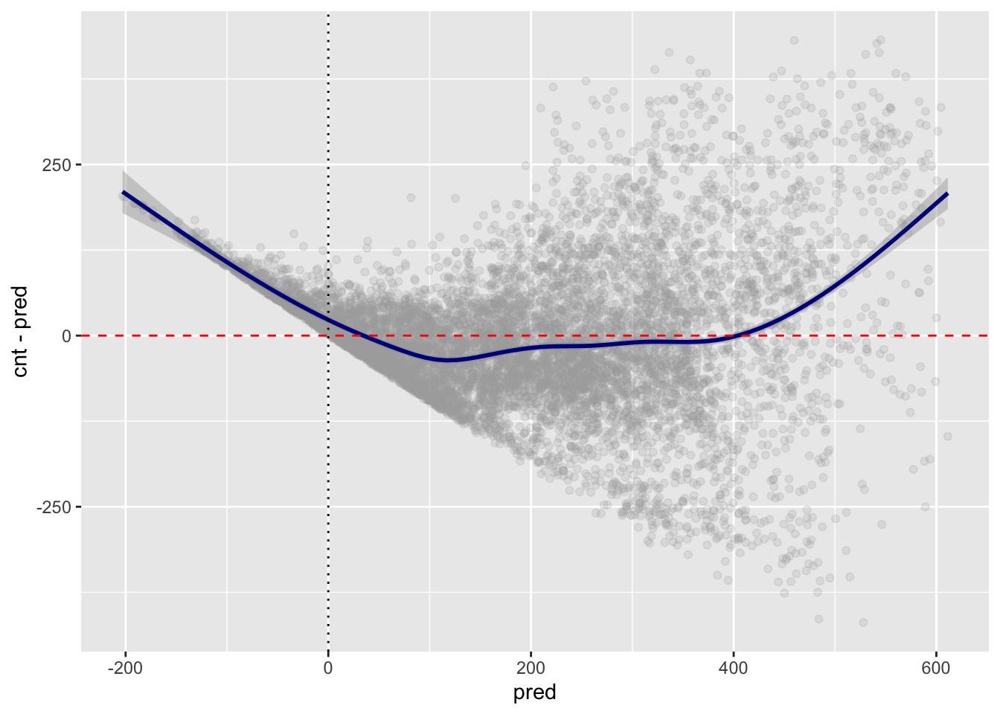

library(tidyverse)
library(lubridate)
library(stargazer)
library(broom)Read the data file, bikeshare_cleaned.csv, as the
data.frame object with the name, bikeshare, using (1) the
read_csv() function and (2) its URL,
https://bcdanl.github.io/data/bikeshare_cleaned.csv.
url <- 'https://bcdanl.github.io/data/bikeshare_cleaned.csv'
bikeshare <- read_csv(url)Use the data.frame bikeshare for the rest of questions
in Question 1.
cnt: count of total rental bikesyear: yearmonth: monthdate: datehr: hourswkday: week dayholiday: holiday if holiday == 1,
non-holiday otherwiseseasons: seasonweather_cond: weather conditiontemp: temperature, measured in standard deviations from
average.hum: humidity, measured in standard deviations from
average.windspeed: wind speed, measured in standard deviations
from average.Convert year, month, wkday,
hr, seasons, and weather_cond
into factor variables.
wkday in order of ‘sunday’, ‘monday’, ‘tuesday’,
etc.seasons in order of ‘spring’, ‘summer’, ‘fall’,
‘winter’.bikeshare <- bikeshare %>%
mutate( year = factor(year),
month = factor(month),
hr = factor(hr),
weather_cond = factor(weather_cond),
wkday = factor(wkday,
levels = c("sunday", "monday", "tuesday", "wednesday",
"thursday", "friday", "saturday") ),
seasons = factor(seasons,
levels = c("spring", "summer", "fall", "winter") )
)
levels(bikeshare$year)## [1] "2011" "2012"levels(bikeshare$month)## [1] "01" "02" "03" "04" "05" "06" "07" "08" "09" "10" "11"
## [12] "12"levels(bikeshare$hr)## [1] "0" "1" "2" "3" "4" "5" "6" "7" "8" "9" "10"
## [12] "11" "12" "13" "14" "15" "16" "17" "18" "19" "20" "21"
## [23] "22" "23"levels(bikeshare$weather_cond)## [1] "Clear or Few Cloudy" "Light Snow or Light Rain"
## [3] "Mist or Cloudy"levels(bikeshare$wkday)## [1] "sunday" "monday" "tuesday" "wednesday"
## [5] "thursday" "friday" "saturday"levels(bikeshare$seasons)## [1] "spring" "summer" "fall" "winter"Divide the bikeshare data.frame into training and
testing data.frames.
set.seed(20221121)
rn <- runif( nrow(bikeshare) )
# it is not necessary to do 50-50 split though
dtrain <- filter(bikeshare, rn >= .5) # training data.frame
dtest <- filter(bikeshare, rn < .5) # testing data.frameTrain the linear regression model using the following
formula and the training data.frame.
Provide the summary of the regression result.
formula <-
cnt ~ temp + hum + windspeed + weather_cond +
hr + month + yearmodel <- lm(formula, data = dtrain)
summary(model)formula <-
cnt ~ temp + hum + windspeed + weather_cond +
hr + month + year
model <- lm(formula, dtrain)
stargazer(model, type = "html")| Dependent variable: | |
| cnt | |
| temp | 45.435*** |
| (2.497) | |
| hum | -16.002*** |
| (1.514) | |
| windspeed | -5.260*** |
| (1.192) | |
| weather_condLight Snow or Light Rain | -63.617*** |
| (4.554) | |
| weather_condMist or Cloudy | -9.905*** |
| (2.719) | |
| hr1 | -22.949*** |
| (7.539) | |
| hr2 | -30.672*** |
| (7.570) | |
| hr3 | -44.896*** |
| (7.600) | |
| hr4 | -46.209*** |
| (7.763) | |
| hr5 | -26.574*** |
| (7.516) | |
| hr6 | 33.192*** |
| (7.607) | |
| hr7 | 169.990*** |
| (7.633) | |
| hr8 | 313.340*** |
| (7.616) | |
| hr9 | 161.589*** |
| (7.563) | |
| hr10 | 102.764*** |
| (7.603) | |
| hr11 | 127.123*** |
| (7.733) | |
| hr12 | 165.599*** |
| (7.608) | |
| hr13 | 157.843*** |
| (7.727) | |
| hr14 | 148.061*** |
| (7.661) | |
| hr15 | 157.643*** |
| (7.769) | |
| hr16 | 214.809*** |
| (7.789) | |
| hr17 | 373.854*** |
| (7.621) | |
| hr18 | 345.954*** |
| (7.895) | |
| hr19 | 235.428*** |
| (7.602) | |
| hr20 | 153.243*** |
| (7.517) | |
| hr21 | 102.863*** |
| (7.632) | |
| hr22 | 65.298*** |
| (7.500) | |
| hr23 | 24.596*** |
| (7.526) | |
| month02 | 9.600* |
| (5.517) | |
| month03 | 32.520*** |
| (5.763) | |
| month04 | 50.391*** |
| (6.158) | |
| month05 | 61.240*** |
| (7.150) | |
| month06 | 45.513*** |
| (7.911) | |
| month07 | 18.049** |
| (8.588) | |
| month08 | 40.037*** |
| (8.183) | |
| month09 | 71.740*** |
| (7.357) | |
| month10 | 85.233*** |
| (6.371) | |
| month11 | 60.285*** |
| (5.686) | |
| month12 | 42.384*** |
| (5.542) | |
| year2012 | 84.498*** |
| (2.205) | |
| Constant | -8.347 |
| (7.693) | |
| Observations | 8,713 |
| R2 | 0.687 |
| Adjusted R2 | 0.685 |
| Residual Std. Error | 101.652 (df = 8672) |
| F Statistic | 475.432*** (df = 40; 8672) |
| Note: | p<0.1; p<0.05; p<0.01 |
Which hr is most strongly associated with changes in
cnt? Interpret the beta estimate of that
hr.
sum_model <- tidy(model) %>%
filter(str_detect(term, "hr")) %>%
arrange(-estimate) %>%
slice(1)All else being equal, an hour17 relative to an
hour 0 is associated with an increase in cnt
by \(373.85\).
All else being equal, an hour17 relative to an
hour 0 is associated with an increase in cnt
by \((373.85 - 2\times 7.62,\; 373.85 +
2\times 7.62)\).
Make a prediction on the outcome variable using the testing data.frame and the regression result from Q1c.
dtest <- dtest %>%
mutate( pred = predict(model,
newdata = dtest) )On average, are the predictions correct in the model in 3a? Are there systematic errors?
# actual vs. predicted outcome plot
ggplot( data = dtest,
aes(x = pred, y = cnt) ) +
geom_point( alpha = 0.2, color = "darkgray" ) +
geom_smooth( color = "darkblue" ) +
geom_abline( color = "red", linetype = 2 ) + # y = x, perfect prediction line
geom_vline(aes(xintercept = 0), lty = 'dotted') +
geom_hline(aes(yintercept = 0), lty = 'dotted')
# resitual plot
ggplot(data = dtest,
aes(x = pred, y = cnt - pred)) +
geom_point(alpha = 0.2, color = "darkgray") +
geom_smooth( color = "darkblue" ) +
geom_hline( aes( yintercept = 0 ), # perfect prediction
color = "red", linetype = 2) +
geom_vline(aes(xintercept = 0), lty = 'dotted')
There is a systematic error in the sense that the variance of
residual increases with the value of pred.
Additionally, some values of pred are less than
zero, which may not make sense because cnt \(\geq\) 0.